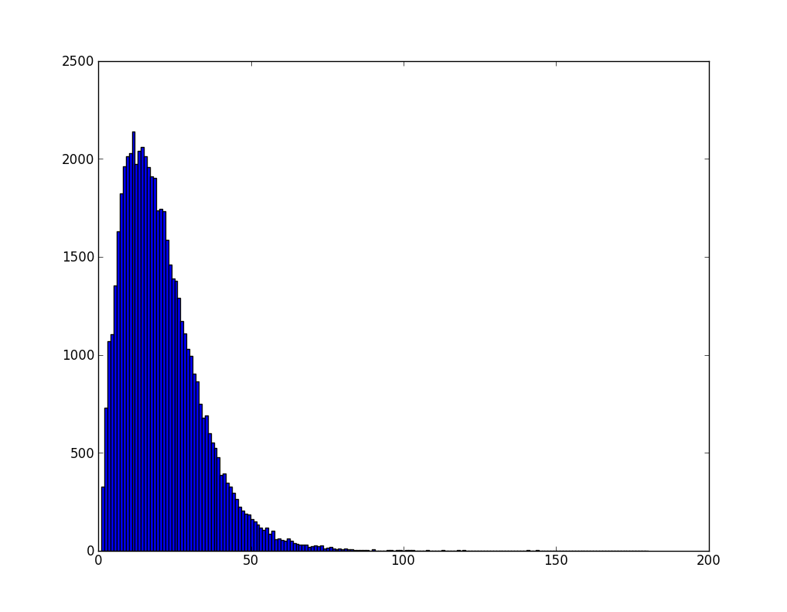

NLP12 Assignment 1: Parts of Speech Tagging
Table of Contents
NOTES:
- In this assignment, the new "requests" python library was used, and
not
urllib, as suggested in the tutorial. The web (and python) have evolved since python 2.5, used in the nltk book, was released in 2008. - Additionally, since
xgoogleseemed to return very few results (1-3 on most searches), I used this script instead. - This document has some equations that require javascript to run, and an internet connection (to http://orgmode.org/ for the functions).
1 Data Exploration [1/1]
1.1 Gathering and cleaning up data
- Errors met while dealing with the Google engine:
Using the xgoogle library, only produced 1-3 result URLs for the searches, so I tried several alternatives: the python-duckduckgo library, but this only produced 1 result per query (duckduckgo only supplies a 'zero-click' api). Eventually, I used this script, which worked perfectly. - Errors met while downloading the material from the Google hits:
I had no trouble, and was using the "requests" library. - Errors met while cleaning up the HTML pages:
The built-innltk.clean_htmlfunction did only a mediocre job cleaning the contents of the web pages, leaving in some irrelevant strings. Using the justext library worked perfectly. - Errors met while segmenting the text into sentences and words:
Headlines were not segmented in to different sentences, but were instead included in the following sentence. The em-dash (represented as "- -", without spaces) was not regarded as separating between words when it should have been. For example, in: "sliding/N movement- -the/DET days/N of/P heaving/VG" we can see the words 'movement' and 'the' not separated. - Errors met by the automatic tagger:
When fed sentences that were correctly segmented to to words, and were also complete, and valid - I had no corrections to offer. Perhaps it's my lack of competence as a tagger for English words..
This is the code I used:
from cPickle import dump
import justext
import nltk
import requests
from google import search
def main():
pages_used = 0
for url in search('aeron chair', stop=30):
text = ""
url_used = False
html = requests.get(url).content
paragraphs = justext.justext(html, justext.get_stoplist('English'))
for paragraph in paragraphs:
if paragraph['class'] == 'good':
if not url_used:
url_used = True
pages_used += 1
text += (paragraph['text'] + '\n')
if url_used:
print 'now analyzing text from: {}'.format(url)
rawfile = 'rawfile_{}.txt'.format(pages_used)
with file(rawfile, 'wb') as f:
f.write(text) # save raw text to file
sent_tokenizer = nltk.data.load('tokenizers/punkt/english.pickle')
sents = sent_tokenizer.tokenize(text)
sentsfile = 'sentsfile_{}.pkl'.format(pages_used)
dump(sents, file(sentsfile, 'wb'), protocol=2) # pickle the sentences to a file
tokenized_sents = []
tokenized_sents += [nltk.word_tokenize(sent) for sent in sents]
tokfile = 'tokfile_{}.pkl'.format(pages_used)
dump(tokenized_sents, file(tokfile, 'wb'), protocol=2) # pickle the tokenized_sents to a file
tagged_sents = [_tag(sent) for sent in tokenized_sents]
tagged_text = ""
for sent in tagged_sents:
tagged_text += ('\n\n\t' + # sentence seperator
# create whitespace-separated 'word/tag' sentences
' '.join(['/'.join(word_tag_tuple) for word_tag_tuple in sent]) +
'\n') # newline after sentence
corpfile = 'corpfile_{}.txt'.format(pages_used)
with file(corpfile, 'wb') as f:
f.write(tagged_text)
return 0
def _tag(sent):
"""
This is taken from http://goo.gl/TxTyq (short for
stackoverflow.com/...) with minor changes.
This function returns the inputed 'sent' as tagged by nltk.pos_tag
converted to Brown simplified tags.
"""
from nltk.tag.simplify import simplify_brown_tag
tagged_sent = nltk.pos_tag(sent)
simplified = [(word, simplify_brown_tag(tag)) for word, tag in tagged_sent]
return simplified
if __name__ == '__main__':
main()
In order to compare two taggers, I wrote the function:
def compare_taggers(tagger1, tagger2, testset):
tagged_by_1 = tagger1.batch_tag([w for sent in testset for (w, t) in sent])
tagged_by_2 = tagger2.batch_tag([w for sent in testset for (w, t) in sent])
for i, ((w1, t1), (w2, t2)) in enumerate(zip(tagged_by_1, tagged_by_2)):
if w1 != w2:
raise RuntimeError("different word order: {} / {}".format(w1, w2))
if t1 != t2:
print "difference in tagging {}:".format(w1)
print 'first tagger: {}'.format(' '.join(['/'.join(word_tag_tuple)
for word_tag_tuple in tagged_by_1[i]]))
print 'second tagger: {}'.format(' '.join(['/'.join(word_tag_tuple)
for word_tag_tuple in tagged_by_2[i]]))
1.2 Gathering basic statistics
IMPORTANT: the code snippets in this section use the tagged_words
corpus (NOT tagged_sents).
To create Figure 1:
Figure 1
I used the following code:
from __future__ import division
from collections import defaultdict, Counter
from numpy import log
import nltk
import pylab
def PlotNumberOfTags(corpus):
word_tag_dict = defaultdict(set)
for (word, tag) in corpus:
word_tag_dict[word].add(tag)
# using Counter for efficiency (leaner than FreqDist)
C = Counter(len(val) for val in word_tag_dict.itervalues())
pylab.subplot(211)
pylab.plot(C.keys(), C.values(), '-go', label='Linear Scale')
pylab.suptitle('Word Ambiguity:')
pylab.title('Number of Words by Possible Tag Number')
pylab.box('off') # for better appearance
pylab.grid('on') # for better appearance
pylab.ylabel('Words With This Number of Tags (Linear)')
pylab.legend(loc=0)
# add value tags
for x,y in zip(C.keys(), C.values()):
pylab.annotate(str(y), (x,y + 0.5))
pylab.subplot(212)
pylab.plot(C.keys(), C.values(), '-bo', label='Logarithmic Scale')
pylab.yscale('log') # to make the graph more readable, for the log graph version
pylab.box('off') # for better appearance
pylab.grid('on') # for better appearance
pylab.xlabel('Number of Tags per Word')
pylab.ylabel('Words With This Number of Tags (Log)')
pylab.legend(loc=0)
# add value tags
for x,y in zip(C.keys(), C.values()):
pylab.annotate(str(y), (x,y + 0.5))
pylab.show()
For the requested functions, This code was used:
def MostAmbiguousWords(corpus, N):
word_tag_dict = defaultdict(set)
for (word, tag) in corpus:
word_tag_dict[word].add(tag)
filtered_tagged_words = [(word, tag) for (word, tag) in corpus if len(word_tag_dict[word]) > N]
return nltk.ConditionalFreqDist(filtered_tagged_words)
def TestMostAmbiguousWords(cfd, N):
all_good = True
for word in cfd.conditions():
all_good &= (len(cfd[word]) > N)
if all_good:
print 'All words occur with more than {} tags.'.format(N)
else:
print 'ERROR: Some words occur with less (or exactly) {} tags'.format(N)
def ShowExamples(word, cfd, corpus):
for tag in cfd[word].keys():
print '\'{}\' as {}: {}\n'.format(word, tag, example(word, tag, corpus))
def example(word, tag, corpus):
idx = corpus.index((word, tag))
sent = corpus[idx-10:idx] + [(word.upper(), tag)] + corpus[idx+1:idx+11]
return ' '.join(word for (word, tag) in sent)
1.3 Is there a correlation between word size or frequency and ambiguity level?
To try and answer this question, I plotted the requested 3D graph (figure 2a):
Figure 2a
In order to better understand it, I also looked at the 3 2D Projections of it (figure 2b), and used a logarithmic scale for word frequency (figure 3c):

Figure 2b - linear projections

Figure 2c - logarithmic projections
Two correlations are clearly visible: word frequency - word length (as
discussed in class, due to "evolution" maybe), and word ambiguity - word length (probably not a strictly linear correlation).
It looks probable, that there is also some correlation between word ambiguity - word frequency, however, it's difficult to decide whether
this correlation will exist after taking into account the previous two
correlation, since they appear to be much more significant.
It is also worth noting that all these observations were made with
only looking at the graphs, and might be wrong when tested for
statistical significance.
This is the code used (with minor changes or commenting out, to create the different graphs):
def correl_plot3D(corpus):
from mpl_toolkits.mplot3d import Axes3D
word_tag_dict = defaultdict(set)
for (word, tag) in corpus:
word_tag_dict[word].add(tag)
raw_wordlist = [word for (word, tag) in corpus]
wordset = set(raw_wordlist)
wordlist = list(wordset)
word_fd = nltk.FreqDist(raw_wordlist)
fig = pylab.figure(figsize=(15,15))
ax = fig.add_subplot(224, projection='3d') # 224
xs = [len(w) for w in wordlist]
ys = [word_fd[w] for w in wordlist]
zs = [len(word_tag_dict[w]) for w in wordlist]
ax.scatter(xs, ys, zs)
ax.set_xlabel('word length (charachters)')
ax.set_ylabel('word frequency')
ax.set_zlabel('word ambiguity')
pylab.subplot(221)
pylab.yscale('log')
pylab.ylim(ymin=1, ymax=100000)
pylab.scatter(xs, ys)
pylab.title('word length - word freq (log)')
pylab.xlabel('word length')
pylab.ylabel('word freq (log)')
pylab.subplot(222)
pylab.xscale('log')
pylab.xlim(xmin=1, xmax=100000)
pylab.scatter(ys, zs)
pylab.title('word freq (log) - word ambiguity')
pylab.xlabel('word freq (log)')
pylab.ylabel('word ambiguity')
pylab.subplot(223)
pylab.scatter(zs, xs)
pylab.title('word ambiguity - word length')
pylab.xlabel('word ambiguity')
pylab.ylabel('word length')
pylab.show()
2 Unigram and Affix Tagger [2/2]
2.1 Unigram Tagger
This is the code for the Unigram Tagger:
from nltk.tag.api import TaggerI
import nltk
class MyUnigramTagger(TaggerI):
def __init__(self, train=None, model=None,
backoff=None, cutoff=0, verbose=False):
if type(train[0]) == tuple:
pass
elif type(train[0][0]) == tuple:
train = flatten(train)
self.cfd = nltk.ConditionalFreqDist(train)
self.default_tag = nltk.FreqDist(tag for (word, tag) in train).max()
self.wordset = set(word for (word, tag) in train)
def tag(self, tokens):
# docs inherited from TaggerI
return zip(tokens, [self.cfd[word].max()
if word in self.wordset
else self.default_tag
for word in tokens])
# This really should have come with either itertools or standard lib..
from itertools import chain
def flatten(listOfLists):
"Flatten one level of nesting"
return chain.from_iterable(listOfLists)
2.2 Affix Tagger
This is the code used:
from nltk.tag import AffixTagger
class MyAffixTagger(AffixTagger):
def __init__(self, train=None, model=None, affix_length=-3,
min_stem_length=2, backoff=None, cutoff=0, verbose=False,
H_param=0):
self.H_param = H_param
AffixTagger.__init__(self, train, model, affix_length,
min_stem_length, backoff, cutoff, verbose)
def _train(self, tagged_corpus, cutoff=0, verbose=False):
"""
Initialize this ContextTagger's ``_context_to_tag`` table
based on the given training data. In particular, for each
context ``c`` in the training data, set
``_context_to_tag[c]`` to the most frequent tag for that
context. However, exclude any contexts that are already
tagged perfectly by the backoff tagger(s).
The old value of ``self._context_to_tag`` (if any) is discarded.
:param tagged_corpus: A tagged corpus. Each item should be
a list of (word, tag tuples.
:param cutoff: If the most likely tag for a context occurs
fewer than cutoff times, then exclude it from the
context-to-tag table for the new tagger.
"""
token_count = hit_count = 0
# A context is considered 'useful' if it's not already tagged
# perfectly by the backoff tagger.
useful_contexts = set()
# Count how many times each tag occurs in each context.
fd = nltk.ConditionalFreqDist()
for sentence in tagged_corpus:
tokens, tags = zip(*sentence)
for index, (token, tag) in enumerate(sentence):
# Record the event.
token_count += 1
context = self.context(tokens, index, tags[:index])
if context is None: continue
fd[context].inc(tag)
# If the backoff got it wrong, this context is useful:
if (self.backoff is None or
tag != self.backoff.tag_one(tokens, index, tags[:index])):
useful_contexts.add(context)
# Build the context_to_tag table -- for each context, figure
# out what the most likely tag is. Only include contexts that
# we've seen at least `cutoff` times.
### best_preds = []
for context in useful_contexts:
best_tag = fd[context].max()
hits = fd[context][best_tag]
if hits > cutoff and self.H(fd[context]) > self.H_param:
self._context_to_tag[context] = best_tag
hit_count += hits
### prediction = fd[context][best_tag] / fd[context].N()
### if prediction > 0.8:
### best_preds.append((prediction, context))
### for prediction, context in sorted(best_preds, reverse=True):
### print '{:3} gives {:.3f} percent prediction as {}'.format(context,
### prediction * 100,
### fd[context].max())
def H(self, p):
# we already used 'from __future__ import division''
N = p.N() # total num of items seen by the fd
sum = 0
for k,v in p.iteritems():
Px = v / N # future division
logPx = log(Px)
PxXlogPx = 0 if Px == 0 else Px * logPx
sum -= PxXlogPx
return sum
def optimize_parameter(self):
corpus = nltk.corpus.brown.tagged_sents(simplify_tags=True)
corpus_len = len(corpus)
trainset = corpus[:int(corpus_len * 8 / 10)] # this is ok, it's an int
develset = corpus[int(corpus_len * 8 / 10):int(corpus_len * 9 / 10)]
testset = corpus[int(corpus_len * 9 / 10):]
options = [] # list of (accuracy, param_val, context_to_tag_table) tuples
for cutoff_candidate in range(1,5) + range(5,10,2) + range(10,51,10):
print 'optimizing cutoff parameter: trying {:2}'.format(cutoff_candidate),
self._context_to_tag.clear() # clear context_to_tag table
self._train(trainset, cutoff=cutoff_candidate)
score = self.evaluate(develset)
print ' ---> it scored {:.5f}'.format(score)
options.append((score, cutoff_candidate, self._context_to_tag))
_, choosen_cutoff, self._context_to_tag = max(options)
print ('choosen cutoff value is {}, which scores {} on the '
'testset.'.format(choosen_cutoff,
self.evaluate(testset)))
To produce this output (H_param was 0):
optimizing cutoff parameter: trying 1 ---> it scored 0.19049 optimizing cutoff parameter: trying 2 ---> it scored 0.19033 optimizing cutoff parameter: trying 3 ---> it scored 0.19027 optimizing cutoff parameter: trying 4 ---> it scored 0.19005 optimizing cutoff parameter: trying 5 ---> it scored 0.18988 optimizing cutoff parameter: trying 6 ---> it scored 0.18979 optimizing cutoff parameter: trying 7 ---> it scored 0.18963 optimizing cutoff parameter: trying 8 ---> it scored 0.18938 optimizing cutoff parameter: trying 9 ---> it scored 0.18921 optimizing cutoff parameter: trying 10 ---> it scored 0.18917 optimizing cutoff parameter: trying 15 ---> it scored 0.18848 optimizing cutoff parameter: trying 20 ---> it scored 0.18722 optimizing cutoff parameter: trying 25 ---> it scored 0.18611 optimizing cutoff parameter: trying 30 ---> it scored 0.18518 optimizing cutoff parameter: trying 35 ---> it scored 0.18367 optimizing cutoff parameter: trying 40 ---> it scored 0.18211 optimizing cutoff parameter: trying 45 ---> it scored 0.18129 choosen cutoff value is 1, which scores 0.182246809581 on the testset.
Later, I added this function to optimize the H_param AND the cutoff
value:
from numpy import linspace
def optimize_H_param():
corp = nltk.corpus.brown.tagged_sents(simplify_tags=True)
for h in linspace(0,1,10)[:-1]: # remove the 1.0
print
print 'optimize_h_param: H_param={:f}'.format(h)
affix = MyAffixTagger(corp, H_param=h)
affix.optimize_parameter()
This produced these values:
optimize_h_param: H_param=0.000000 optimizing cutoff parameter: trying 1 ---> it scored 0.19049 optimizing cutoff parameter: trying 2 ---> it scored 0.19033 optimizing cutoff parameter: trying 3 ---> it scored 0.19027 optimizing cutoff parameter: trying 4 ---> it scored 0.19005 optimizing cutoff parameter: trying 5 ---> it scored 0.18988 optimizing cutoff parameter: trying 7 ---> it scored 0.18963 optimizing cutoff parameter: trying 9 ---> it scored 0.18921 optimizing cutoff parameter: trying 10 ---> it scored 0.18917 optimizing cutoff parameter: trying 20 ---> it scored 0.18722 optimizing cutoff parameter: trying 30 ---> it scored 0.18518 optimizing cutoff parameter: trying 40 ---> it scored 0.18211 optimizing cutoff parameter: trying 50 ---> it scored 0.18028 choosen cutoff value is 1, which scores 0.181345738773 on the testset. optimize_h_param: H_param=0.111111 optimizing cutoff parameter: trying 1 ---> it scored 0.17432 optimizing cutoff parameter: trying 2 ---> it scored 0.17416 optimizing cutoff parameter: trying 3 ---> it scored 0.17410 optimizing cutoff parameter: trying 4 ---> it scored 0.17388 optimizing cutoff parameter: trying 5 ---> it scored 0.17371 optimizing cutoff parameter: trying 7 ---> it scored 0.17346 optimizing cutoff parameter: trying 9 ---> it scored 0.17305 optimizing cutoff parameter: trying 10 ---> it scored 0.17300 optimizing cutoff parameter: trying 20 ---> it scored 0.17105 optimizing cutoff parameter: trying 30 ---> it scored 0.16902 optimizing cutoff parameter: trying 40 ---> it scored 0.16594 optimizing cutoff parameter: trying 50 ---> it scored 0.16419 choosen cutoff value is 1, which scores 0.164895957754 on the testset. optimize_h_param: H_param=0.222222 optimizing cutoff parameter: trying 1 ---> it scored 0.16144 optimizing cutoff parameter: trying 2 ---> it scored 0.16128 optimizing cutoff parameter: trying 3 ---> it scored 0.16122 optimizing cutoff parameter: trying 4 ---> it scored 0.16100 optimizing cutoff parameter: trying 5 ---> it scored 0.16083 optimizing cutoff parameter: trying 7 ---> it scored 0.16058 optimizing cutoff parameter: trying 9 ---> it scored 0.16017 optimizing cutoff parameter: trying 10 ---> it scored 0.16012 optimizing cutoff parameter: trying 20 ---> it scored 0.15824 optimizing cutoff parameter: trying 30 ---> it scored 0.15626 optimizing cutoff parameter: trying 40 ---> it scored 0.15324 optimizing cutoff parameter: trying 50 ---> it scored 0.15193 choosen cutoff value is 1, which scores 0.151463716184 on the testset. optimize_h_param: H_param=0.333333 optimizing cutoff parameter: trying 1 ---> it scored 0.14877 optimizing cutoff parameter: trying 2 ---> it scored 0.14861 optimizing cutoff parameter: trying 3 ---> it scored 0.14855 optimizing cutoff parameter: trying 4 ---> it scored 0.14833 optimizing cutoff parameter: trying 5 ---> it scored 0.14816 optimizing cutoff parameter: trying 7 ---> it scored 0.14791 optimizing cutoff parameter: trying 9 ---> it scored 0.14755 optimizing cutoff parameter: trying 10 ---> it scored 0.14752 optimizing cutoff parameter: trying 20 ---> it scored 0.14600 optimizing cutoff parameter: trying 30 ---> it scored 0.14449 optimizing cutoff parameter: trying 40 ---> it scored 0.14162 optimizing cutoff parameter: trying 50 ---> it scored 0.14032 choosen cutoff value is 1, which scores 0.138670606232 on the testset. optimize_h_param: H_param=0.444444 optimizing cutoff parameter: trying 1 ---> it scored 0.13839 optimizing cutoff parameter: trying 2 ---> it scored 0.13823 optimizing cutoff parameter: trying 3 ---> it scored 0.13817 optimizing cutoff parameter: trying 4 ---> it scored 0.13795 optimizing cutoff parameter: trying 5 ---> it scored 0.13778 optimizing cutoff parameter: trying 7 ---> it scored 0.13757 optimizing cutoff parameter: trying 9 ---> it scored 0.13737 optimizing cutoff parameter: trying 10 ---> it scored 0.13733 optimizing cutoff parameter: trying 20 ---> it scored 0.13592 optimizing cutoff parameter: trying 30 ---> it scored 0.13453 optimizing cutoff parameter: trying 40 ---> it scored 0.13247 optimizing cutoff parameter: trying 50 ---> it scored 0.13129 choosen cutoff value is 1, which scores 0.129722763563 on the testset. optimize_h_param: H_param=0.555556 optimizing cutoff parameter: trying 1 ---> it scored 0.12325 optimizing cutoff parameter: trying 2 ---> it scored 0.12308 optimizing cutoff parameter: trying 3 ---> it scored 0.12303 optimizing cutoff parameter: trying 4 ---> it scored 0.12292 optimizing cutoff parameter: trying 5 ---> it scored 0.12280 optimizing cutoff parameter: trying 7 ---> it scored 0.12260 optimizing cutoff parameter: trying 9 ---> it scored 0.12240 optimizing cutoff parameter: trying 10 ---> it scored 0.12236 optimizing cutoff parameter: trying 20 ---> it scored 0.12110 optimizing cutoff parameter: trying 30 ---> it scored 0.11981 optimizing cutoff parameter: trying 40 ---> it scored 0.11816 optimizing cutoff parameter: trying 50 ---> it scored 0.11714 choosen cutoff value is 1, which scores 0.114760797133 on the testset. optimize_h_param: H_param=0.666667 optimizing cutoff parameter: trying 1 ---> it scored 0.10689 optimizing cutoff parameter: trying 2 ---> it scored 0.10685 optimizing cutoff parameter: trying 3 ---> it scored 0.10684 optimizing cutoff parameter: trying 4 ---> it scored 0.10678 optimizing cutoff parameter: trying 5 ---> it scored 0.10667 optimizing cutoff parameter: trying 7 ---> it scored 0.10648 optimizing cutoff parameter: trying 9 ---> it scored 0.10636 optimizing cutoff parameter: trying 10 ---> it scored 0.10634 optimizing cutoff parameter: trying 20 ---> it scored 0.10531 optimizing cutoff parameter: trying 30 ---> it scored 0.10454 optimizing cutoff parameter: trying 40 ---> it scored 0.10313 optimizing cutoff parameter: trying 50 ---> it scored 0.10246 choosen cutoff value is 1, which scores 0.100417007188 on the testset. optimize_h_param: H_param=0.777778 optimizing cutoff parameter: trying 1 ---> it scored 0.08989 optimizing cutoff parameter: trying 2 ---> it scored 0.08989 optimizing cutoff parameter: trying 3 ---> it scored 0.08989 optimizing cutoff parameter: trying 4 ---> it scored 0.08984 optimizing cutoff parameter: trying 5 ---> it scored 0.08974 optimizing cutoff parameter: trying 7 ---> it scored 0.08958 optimizing cutoff parameter: trying 9 ---> it scored 0.08950 optimizing cutoff parameter: trying 10 ---> it scored 0.08947 optimizing cutoff parameter: trying 20 ---> it scored 0.08878 optimizing cutoff parameter: trying 30 ---> it scored 0.08831 optimizing cutoff parameter: trying 40 ---> it scored 0.08693 optimizing cutoff parameter: trying 50 ---> it scored 0.08648 choosen cutoff value is 3, which scores 0.08349573563 on the testset. optimize_h_param: H_param=0.888889 optimizing cutoff parameter: trying 1 ---> it scored 0.06796 optimizing cutoff parameter: trying 2 ---> it scored 0.06796 optimizing cutoff parameter: trying 3 ---> it scored 0.06796 optimizing cutoff parameter: trying 4 ---> it scored 0.06794 optimizing cutoff parameter: trying 5 ---> it scored 0.06786 optimizing cutoff parameter: trying 7 ---> it scored 0.06770 optimizing cutoff parameter: trying 9 ---> it scored 0.06762 optimizing cutoff parameter: trying 10 ---> it scored 0.06759 optimizing cutoff parameter: trying 20 ---> it scored 0.06704 optimizing cutoff parameter: trying 30 ---> it scored 0.06663 optimizing cutoff parameter: trying 40 ---> it scored 0.06548 optimizing cutoff parameter: trying 50 ---> it scored 0.06522 choosen cutoff value is 3, which scores 0.0618281259823 on the testset.
We can clearly see that cutting off according to ANY criteria, causes
a degradation in the tagger's performance, except for the case when
H_param was high (\(\frac{7}{9}\), \(\frac{8}{9}\)), where cutoff values
of 1-3 are equally good.
- Does entropy filtering improve accuracy? It does not (!!)
- How do you determine the range of values to test for the cutoff? I used the values 1-5, 7, 9, 10, 20, 30, 40, 50. This was not taken from the corpus, but seemed to give more than reasonable cover for several corpora.
- Is the accuracy value evolving in a predictable manner as the cutoff varies? It decreases as the cutoff increases.
- Describe the list of suffixes that are good tag predictors – are you surprised by what you observe?
eir gives 99.963 percent prediction as PRO uld gives 99.942 percent prediction as MOD ods gives 99.735 percent prediction as N rld gives 99.624 percent prediction as N iam gives 99.444 percent prediction as NP ths gives 99.413 percent prediction as N tel gives 99.379 percent prediction as N ups gives 99.363 percent prediction as N ror gives 99.306 percent prediction as N cil gives 99.296 percent prediction as N 're gives 99.288 percent prediction as PRO rgy gives 99.180 percent prediction as N hip gives 99.135 percent prediction as N tem gives 99.057 percent prediction as N ege gives 98.997 percent prediction as N tee gives 98.985 percent prediction as N umn gives 98.936 percent prediction as N try gives 98.825 percent prediction as N ogy gives 98.805 percent prediction as N hor gives 98.780 percent prediction as N ity gives 98.778 percent prediction as N dex gives 98.765 percent prediction as N arp gives 98.649 percent prediction as ADJ hod gives 98.611 percent prediction as N yne gives 98.485 percent prediction as NP not gives 98.473 percent prediction as MOD nst gives 98.425 percent prediction as P ons gives 98.391 percent prediction as N oms gives 98.378 percent prediction as N elf gives 98.328 percent prediction as PRO ife gives 98.230 percent prediction as N bol gives 98.214 percent prediction as N gth gives 98.127 percent prediction as N dar gives 98.077 percent prediction as N lue gives 98.058 percent prediction as N wly gives 98.000 percent prediction as ADV sis gives 97.950 percent prediction as N hts gives 97.947 percent prediction as N rey gives 97.917 percent prediction as NP ski gives 97.778 percent prediction as NP ffs gives 97.778 percent prediction as N ols gives 97.612 percent prediction as N ool gives 97.543 percent prediction as N
I can see why some of these would be good predictors, especially for the Nouns I (think I) recognize, such as "ool", "ols", "ogy", and why "'re", but for most of them - I can't really imagine why they are so good. I have to admit that I don't recognize any of these as a suffix I studies in linguistics.
3 Fine-grained Error Analysis [5/5]
3.1 Known vs. Unknown Accuracy
I propose to identify known words as words that appeared more than \(N\) times in the training corpus, where \(N>0\) (I'll use \(N=1\), but that's just one option).
I suggest adding the code (for \(N=1\)):
self.wordset = set([word for sentence in train for (word, tag) in sentence])
To every tagger. This could be used in the evaluate2 method, in
the following manner:
def evaluate2(self, gold):
"""
This is part of nlp12 course, hw 1.
"""
tagged_sents = self.batch_tag([untag(sent) for sent in gold])
gold_tokens = sum(gold, [])
test_tokens = sum(tagged_sents, [])
known_gold_tokens = filter(lambda word, tag: word in self.wordset, gold_tokens)
unknown_gold_tokens = filter(lambda word, tag: word not in self.wordset, gold_tokens)
known_test_tokens = filter(lambda word, tag: word in self.wordset, test_tokens)
unknown_test_tokens = filter(lambda word, tag: word not in self.wordset, test_tokens)
# return a tuple (known_accuracy, unknown_accuracy)
return (accuracy(known_gold_tokens, known_test_tokens),
accuracy(unknown_gold_tokens, unknown_test_tokens))
3.2 Per Tag Precision and Recall
def MicroEvaluate(self, corpus_test):
all_tags = set([t for sent in corpus_test for (w,t) in sent])
tagged_sents = self.batch_tag([untag(sent) for sent in corpus_test])
corpus_tokens = sum(corpus_test, [])
tagger_tokens = sum(tagged_sents, [])
for tag in all_tags:
TP = TN = FP = FN = 0
for tagged, gold in zip(tagger_tokens, corpus_tokens):
wt, tt = tagged # word_tagger, tag_tagger
wg, tg = gold # word_gold, tag_gold
if wt != wg:
raise RuntimeError('the tagger changed the words or the word sequence '
'(got {} instead of {})'.format(wt, wg))
if tt == tag:
if tt == tg:
TP += 1
else:
FP += 1
else:
if tg == tag:
FN += 1
else:
TN += 1
print '{:6}: TP={}, FP={}, FN={}, TN={}'.format(tag, TP, FP, FN, TN)
if (TP + FP) > 0:
_percision = TP / (TP + FP)
else:
_percision = 0.0
if (TP + FN) > 0:
_recall = TP / (TP + FN)
else:
_recall = 0.0
if (2 * TP + FP + FN) > 0:
_f_measure = (2 * TP) / (2 * TP + FP + FN)
else:
_f_measure = 0.0
print '{:6}: Precision={}, Recall={}, F-measure={}'.format(tag, _percision,
_recall, _f_measure)
3.3 Confusion Matrix
The data structure for this is the ConditionalFreqDist.
The code (in api.py):
def ConfusionMatrix(self, corpus_test, tabulate=False):
from nltk import ConditionalFreqDist
tagged_sents = self.batch_tag([untag(sent) for sent in corpus_test])
corpus_tokens = sum(corpus_test, [])
tagger_tokens = sum(tagged_sents, [])
errors = []
for tagger_res, corpus_res in zip(tagger_tokens, corpus_tokens):
t_tagger = tagger_res[1]
t_corpus = corpus_res[1]
if t_tagger != t_corpus:
errors.append((t_tagger, t_corpus))
cfd = ConditionalFreqDist(errors)
if tabulate:
cfd.tabulate()
return cfd
Results for brown corpus (simplified tags, only the first 10000 sentences, due to time limitations):
time cfd = conf(nltk.corpus.brown.tagged_sents(simplify_tags=True)[:10000],True)
' ( ) * . ADJ ADV CNJ DET EX FW MOD N NIL NP NUM P PRO TO UH V VB+PPO VBZ VD VG VN WH
0 78 0 0 0 0 0 0 0 0 0 0 0 0 0 0 1 0 0 0 0 0 0 0 0 0 0 0
'' 0 6 0 0 0 0 0 0 0 0 0 0 0 0 0 0 0 0 0 0 0 0 0 0 0 0 0 0
, 0 0 0 0 0 0 0 0 0 0 0 1 0 0 0 0 0 0 0 0 0 0 0 0 0 0 0 0
: 673 0 0 0 0 836 0 0 0 0 0 0 0 0 0 1 0 0 0 0 0 0 0 0 0 0 0 0
ADJ 0 0 0 0 0 0 0 323 1 2009 0 0 0 475 0 78 427 22 0 0 0 30 0 0 7 47 70 0
ADV 0 0 0 0 834 0 121 0 55 1300 51 0 0 21 0 0 3 38 0 0 2 8 0 0 0 0 0 82
CNJ 0 0 0 0 0 0 0 27 0 2 0 0 0 0 0 0 0 31 0 0 0 0 0 0 0 0 0 0
DET 0 0 0 0 0 0 6 25 76 0 0 7 0 8 0 0 0 0 0 0 0 0 0 0 0 0 0 3
EX 0 0 0 0 0 0 0 49 0 0 0 0 0 0 0 0 0 0 0 0 0 0 0 0 0 0 0 0
FW 0 0 0 0 0 0 0 9 0 0 0 0 0 0 0 0 0 0 0 0 0 0 0 0 0 0 0 0
L 0 0 0 0 0 0 0 0 0 23 0 0 0 0 0 0 47 0 0 0 0 0 0 0 0 0 0 0
MOD 0 0 0 0 0 0 0 0 0 0 0 0 0 17 0 0 0 0 0 0 0 2 0 0 0 0 0 0
N 0 0 0 0 0 0 417 63 0 44 0 7 4 0 0 10 28 13 260 0 2 509 0 177 10 228 11 0
NN 0 0 406 409 0 0 4232 911 9 155 7 200 155 14757 1 7540 883 87 344 0 33 1307 2 569 653 1105 1376 39
NP 0 0 0 0 0 0 1245 12 0 9 0 26 0 3435 0 0 28 0 3 0 0 7 0 0 0 6 168 0
NUM 0 0 0 0 0 0 4 0 0 0 0 0 0 7 0 0 0 0 55 0 0 0 0 0 0 0 0 0
P 0 0 0 0 0 0 18 601 3516 419 0 12 0 7 0 0 0 0 1 5 0 18 0 0 0 0 0 141
PRO 0 0 0 0 0 0 0 667 0 1 0 0 0 1 0 0 0 122 0 0 0 0 0 0 0 0 0 0
TO 0 0 0 0 0 0 0 0 0 0 0 0 0 0 0 1 0 2021 0 0 0 0 0 0 0 0 0 0
UH 0 0 0 0 0 0 1 0 0 2 0 0 0 0 0 0 0 0 0 0 0 0 0 0 0 0 0 0
V 0 0 0 0 0 0 130 16 1 0 0 0 5 1007 0 0 0 0 0 0 9 0 0 1088 32 0 41 0
VD 0 0 0 0 0 0 7 0 0 0 0 0 0 10 0 0 0 0 0 0 0 2460 0 0 0 0 700 0
VG 0 0 0 0 0 0 37 0 1 0 0 0 0 163 0 0 0 102 0 0 0 194 0 0 0 0 0 0
VN 0 0 0 0 0 0 11 0 0 0 0 0 0 53 0 0 0 0 0 0 0 533 0 0 842 0 0 0
WH 0 0 0 0 0 0 0 0 256 40 0 0 0 0 0 0 0 0 0 0 1 0 0 0 0 0 0 0
CPU times: user 106.12 s, sys: 0.19 s, total: 106.31 s
Wall time: 106.71 s
In [7]: cfd = conf(nltk.corpus.brown.tagged_sents(simplify_tags=False)[:10000],True)
# too big to fit in page, so
In [8]: for c in cfd.conditions():
...: print '{} {}'.format(c, cfd[c].max())
...:
'
'' '
, ,-HL
. .-HL
: .
ADJ JJ
ADV RB
CNJ CC
DET AT
EX RB
FW RB
L CD
MOD MD
N NN
NN NP
NP NN-TL
NUM CD
P IN
PRO PP$
TO IN
UH AT
V VB
VD VBD
VG VBG
VN VBN
WH WDT
3.4 Sensitivity to the Size and Structure of the Training Set: Cross-Validation
The code for the function:
def crossValidate(self, corpus, n):
from sys import stdout
from itertools import chain
groups = split_seq(corpus, n)
table = {}
stdout.write(' i accuracy(i)\n' + 15*'-'+ '\n')
for i in range(n):
trainset = list(chain.from_iterable(groups[:i] + groups[i+1:]))
test = groups[i]
self._train(trainset, 0, False)
tagged_sents = self.batch_tag([untag(sent) for sent in test])
table[i] = accuracy(test, tagged_sents)
stdout.write('{:>2}) {}\n'.format(i, table[i])) # print the table
stdout.flush()
return table
Produced:
In [12] t0 = nltk.DefaultTagger('NN')
In [13] t1 = nltk.UnigramTagger(nltk.corpus.treebank.tagged_sents(simplify_tags=True), backoff=t0)
In [14] t2 = nltk.BigramTagger(nltk.corpus.treebank.tagged_sents(simplify_tags=True), backoff=t1)
In [15] table = t2.crossValidate(nltk.corpus.brown.tagged_sents(simplify_tags=True), 10)
i accuracy(i)
--------------
0) 0.135158702476
1) 0.483606557377
2) 0.486920125567
3) 0.472096267876
4) 0.460062783397
5) 0.482211370771
6) 0.514475061039
7) 0.571154516917
8) 0.56853854203
9) 0.55284269271
In [16]: average(table.values())
Out[16]: 0.47270666201604455
We can see that the accuracy of the 0th iteration is very low in comparison to the others. Ignoring it produces:
In [18]: average([table[i] for i in range(1,10)]) Out[18]: 0.51021199085377655
Which is not very different. This, however, shows the importance of covering as much of the training set as possible, since there might be significant variations.
3.5 Stratified Samples
To define sentence lengths, I used:
fd = nltk.FreqDist([len(sent) for sent in nltk.corpus.brown.tagged_sents()])
hist(list(chain.from_iterable([[k]*fd[k] for k in fd.keys()])),
bins=(max(fd.keys()) - min(fd.keys()) + 1))
The histogram is this: 
I choose the lengths of \(short \leq 12\) (short, after first peak), \(12 < medium \leq 23\) (medium), and \(23 < long\) (long). Looking at the numbers, we see it's the integer equivalent of dividing to 3 equal groups:
\begin{equation} \sum_{i=0}^{\infty} fd[i] = 57340,\: \sum_{i=0}^{12} fd[i] = 18167 \approx \frac{1}{3} \cdot 57340,\: \sum_{i=0}^{23} fd[i] = 38322 \approx \frac{2}{3} \cdot 57340 \end{equation}def stratifiedSamples(classes, N=10):
from numpy.random import shuffle # and it's O(n), knuth...
training = []
test = []
frac = 1.0 / N
if type(classes) == int or type(classes[0]) == int: # sentence length
short = []
med = []
lng = []
for sent in nltk.corpus.brown.tagged_sents(simplify_tags=True):
s_len = len(sent)
if s_len <= 12:
short.append(sent)
elif s_len <= 23:
med.append(sent)
else:
lng.append(sent)
shuffle(short)
shuffle(med)
shuffle(lng)
for arr in (short, med, lng):
cut = int(len(arr) * frac)
test.extend(arr[:cut])
training.extend(arr[cut:])
elif type(classes[0]) == str: # categories..
for cat in classes:
sents = list(nltk.corpus.brown.tagged_sents(categories=cat, simplify_tags=True))
shuffle(sents)
cut = int(len(sents) * frac)
test.extend(sents[:cut])
training.extend(sents[cut:])
Perform a cycle of training-testing on the Brown corpus for the last tagger discussed in class for each of the following cases:
- Random split 90%-10%
In [3]: corpus = list(nltk.corpus.brown.tagged_sents(simplify_tags=True))
In [4]: from numpy.random import shuffle
In [5]: shuffle(corpus)
In [6]: trn = corpus[:len(corpus) * 9 / 10]
In [7]: tst = corpus[len(corpus) * 9 / 10:]
In [8]: t0 = nltk.DefaultTagger('NN')
In [9]: t1 = nltk.UnigramTagger(trn, backoff=t0)
In [10]: t2 = nltk.BigramTagger(trn, backoff=t1)
In [11]: t2.evaluate(tst)
Out[11]: 0.9310641552729706
- Stratified split 90%-10% according to sentence length (split short/medium/long)
In [12]: trn, tst = stratifiedSamples([12, 23], 10)
In [13]: t0 = nltk.DefaultTagger('NN')
In [14]: t1 = nltk.UnigramTagger(trn, backoff=t0)
In [15]: t2 = nltk.BigramTagger(trn, backoff=t1)
In [16]: t2.evaluate(tst)
Out[16]: 0.9313322015878732
- Stratified split 90%-10% according to the sentence genre.
In [32]: trn, tst = stratifiedSamples(CATEGORIES,10)
In [34]: t0 = nltk.DefaultTagger('NN')
In [35]: t1 = nltk.UnigramTagger(trn, backoff=t0)
In [36]: t2 = nltk.BigramTagger(trn, backoff=t1)
In [37]: t2.evaluate(tst)
Out[37]: 0.9325498656042589
We can see that all 3 cases enjoy very good accuracy \((> 0.93)\), with very slight improvement for the two stratified cases over the random one. I believe the reason for this is that the brown corpus has a great number of tagged sentences, and therefore the random sampling is as diverse and as good as the stratified ones. Perhaps in a smaller corpus, there would have been more visible differences.